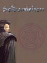
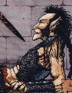

Récits Légendes de Kirin Tor Personnages Célébrités Guildes
Outils Calendrier Calendrier Illustré Mod d'interface
Informations Historiens FAQ Liens Crédits
Les légendes de Kirin Tor
Pileouface
Mail : ==> Afficher les personnages de Pileouface
"Pile ou face"
Age : 32 (estimé)Sexe : Homme
Race : Humain
Faction : Alliance
Formation : Voleur
Description : "rooh mais laissez moi donc tranquille, je n'ai que faire de vos supplications, et puis c'est bien votre faute si j'ai due trancher votre tete de mort vivant, quelle idée de se mettre un contrat a dos,....."
"Pile ou Face........un surnom tout au plus, mais si vous y tenez tant que cela je ne vois pas pourquoi je ne vous parlerais pas plus de moi...." Pile ou Face est dans le darkshire, assis pres du feu qu'il vient de faire craquer; il vient de recuperer une prime assez speciale, il est vrai: une tete de mort vivant qui continue de parler...voila qui le change de ses habitudes.
Alors que les deux comperes (l'un dans le sac de transport et l'autre confortablement installé sur une couverture sèche aupres de feu de camp, se curant les dents avec une brindille de la maniere la moins classe posible) se reposent de leur longue marche, ne voila pas que la tete se met a devenir curieuse....
" oh il n'y a pas grand chose a dire vous savez, je suis gredin et l'ai toujours été aussi loin que je me souvienne, il en est ainsi lorsque l'on nait au nord du quartier du canal a stormwind....vos reves se limitent a un etal bien fourni et sans surveillance.....je n'ai jamais eu besoin de rien d'autre que ce que mes larcins me procuraient et j'ai vecu ainsi pendant longtemps; puis avec le temps et une reputation grandissante aupres des services d'ordre de la cité j'ai du me resigner a quitter la capitale pour ..."prendre du recul" disons....j'ai bourlingué, et vu du pays.....j'ai meme poussé mes pas vers le nord, dans ce qu'ils appellent les malterres.....et j'en suis revenu avec ces deux épées *regarde ses deux épées briller...*...je ne parviens d'ailleurs pas a me rappeler de ou je les ai eu, et dans quelles circonstances..mais qu'importe, elles m'ont sauvés la mise en de multiples occasions et le referont encore j'en suis sur.......mais arretez d'insister puisque je vous dis que je ne sais pas d'ou elles viennent....donc..je disais...oui apres moultes contrats, employeurs, primes, et victimes, je me suis dis qu'il me fallait trouver un emploi serieux et honnorable, ne serais ce que pour faire plaisir a feu ma bonne mere, et voila, ainsi j'ai rejoins les rangs de ces gars, les "orphelins de hyjal", ils sont sympatiques et visiblement dignes de confiance, du coup j'ai aps trop hesité.....enfin voila à présent si vous le permettez je vais dormir, demain il y a encore du chemin avant d'arriver dans les carmines et j'aimerais y etre assez tot!......bonne nuit tete a la langue bien pendue...."
Pile ou face ne l'entendra pas mais la tete lui repondra doucement " c'est toi qui a la langue bien pendue pauvre fou..."
Le lendemain pilou se rend dans les carmines et arrive chez le sénéchal:
" b'jour, v'la la prime que vous recherchiez et je vous previens c'est la derniere fois que vous m'envoyez tuer du mort vivant sans me le dire, ce zigoto m'a cassé les pieds sur tout le chemin du retour..." pilou jette le sac sur le bureau du sénéchal, prend les pieces d'or et repart aussitot laissant le fonctionnaire un peu surpris " mort vivant ? mais il n'a jamais été question de mort vivant..." le sénéchal ouvre le sac pour verifier les dires du larron, et ne trouve que la tete bien froide et figée de la prime... "encore un gars qui abuse trop de la bouteille" se dit le sénéchal "mais dans quel etat a t'il due se mettre pour entendre cette tete parler..."
Loin, dans une dimension interdite, au plus profond des ténèbres, un rire se fait entendre, le rire d'une puissante entité,visiblement tres satifsfaite,...."enfin ... enfin je sais ou elles sont!.....les "deux soeurs" seront bientot a moi....bientot....tres bientot..."
Age: 32 ans (estimé)
Alignement: chaotique neutre
Description: Pilou est brun au cheveux épais gras et long, dans lesquels se balladent tresses ficelles de couleur sombres, bijous en os et autres ustensiles..il porte une barbe assez mal taillée.... il est d'une corpulence assez fine et seche, adaptés a ses qualités d'assassins....il doit atteindre les 1m78...et porte toujours deux épées sur lui, les épées semblent animées d'une vie indépendante et toujours luir de maniere menaçante.....
Plus d'infos sur "Pile ou face" >>>
Lire le récit de "Pile ou face" >>>
Seldanishen Windwhispers
 Age : 270
Age : 270
Sexe : Homme
Race : Elfe
Faction : Alliance
Formation : Druide
Description : Seldanishen Windwhispers
Seldanishen a servi pendant les trois guerres, au meme titre que nombres de ses compatriotes, sous les ordres du druide fandral. Durant la troisieme guerre, à la bataille du mont Hyjal, lui et ses hommes ont été envoyés en mission pour les druides mais du fait de differents entre certains druides au commandement ( les tensions entre les druides du cercle de cenarius et ceux qui dirigent darnassus ont toujours existé) leur mission a été un echec et de nombreux braves perirent pour rien. Ne voulant pas endosser la responsabilité de cet echec Fandral pretexta une trahison de Seldanishen et le fit marquer de la marque de l infamie (d ou un masque en permanence sur le visage pour cacher cette marque qui ressemble a une cicatrice sur le bas du visage). Seldanishen fut ensuite banni et interdit de sejour sur les terres des elfes de la nuit. quelques temps et aventures apres, avec la monté des tensions avec la horde, Seldanishen put recommencer ses activités sur le sol de darnassus, les autorités ayant d autres chats a fouetter. il profita de cela pour rassembler des elfes de la nuit et monter les Orphelins de Hyjal, une guilde pour honnorer les esprits de ses amis tombés inutilement au combat et pour eviter que pareil abomination ne se reproduise
- Age moyen: 270 ans
- alliés: cercle de cenarius, toutes faction dissidente des elfes de la nuit desservant la lumiere et la nature
- ennemis: autorités de Darnassus, druides de Darnassus, archidruide Fandral
- alignement: loyal neutre
Plus d'infos sur Seldanishen Windwhispers >>>
Lire les 2 récits de Seldanishen Windwhispers >>>